Auxiliar 2: Ley de Gauss
La Ley de Gauss relaciona el flujo eléctrico a través de una superficie cerrada con la carga encerrada. Es el método más eficiente para sistemas con simetría.
Temas que cubre
- Flujo eléctrico $\Phi_E$ a través de superficies
- Ley de Gauss en forma integral: $\oint \mathbf{E}\cdot d\mathbf{S} = Q_{\text{enc}}/\varepsilon_0$
- Forma diferencial: $\nabla\cdot\mathbf{E} = \rho/\varepsilon_0$
- Elección de la superficie gaussiana y condiciones de simetría
- Aplicación a esferas, cilindros y planos infinitos
Conceptos clave
Flujo eléctrico
El flujo mide cuánto campo eléctrico "atraviesa" una superficie. Si el campo es paralelo a la superficie, el flujo es cero; si es perpendicular, es máximo.
Superficie gaussiana
Superficie imaginaria cerrada que elegimos para aplicar la ley. Debe coincidir con la simetría del problema para que $\mathbf{E}$ sea constante (o cero) en ella.
Carga encerrada
Solo importa la carga dentro de la superficie gaussiana. Las cargas externas no contribuyen al flujo neto, aunque sí afectan el campo local.
Forma diferencial
Equivalente local de la ley de Gauss: la divergencia del campo en un punto es proporcional a la densidad de carga en ese punto.
Fórmulas fundamentales

Q_enc = carga total dentro de la superficie.


Qué hay que entender
- Gauss: cuando hay simetría esférica, cilíndrica o planar. El campo debe ser uniforme en la superficie gaussiana.
- Coulomb: para geometrías sin simetría o para verificar resultados de Gauss.
- La simetría permite sacar $E$ fuera de la integral: $\oint \mathbf{E}\cdot d\mathbf{S} = E\cdot A_{\text{gaussiana}}$.
- Siempre calcula $Q_{\text{enc}}$ correctamente: integra $\rho$ solo dentro de tu superficie.